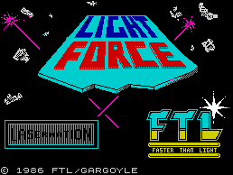
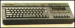
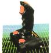

|
SOFTWARE
|
| 1942 | Elite |
| BUCCANEER | Firebird |
| DAN DARE | Virgin |
| DEACTIVATORS | Ariolasoft |
| FAIRLIGHT 128 | The Edge |
| FREE TEXT DATABASE | Roybot |
| GLIDER RIDER | Quicksilva |
| HEAD COACH | Addictive Games |
| JEWELS OF DARKNESS | Rainbird |
| KANE | Mastertronic |
| LAP OF THE GODS | Mastertronic |
| LIGHTFORCE | Faster Than Light |
| MICRODRIVE RECOVERY | Roybot |
| MISSION OMEGA | Mind Games |
| NEXOR | Design Design |
| OCTAGON SQUAD | Mastertronic |
| PAPERBOY | Elite |
| REBEL STAR | Firebird |
| REVOLUTION | Vortex |
| STORM | Mastertronic |
| STRIKE FORCE HARRIER | Mirrorsoft |
| TRIVIAL PURSUIT | Domark |
| UNIVERSAL HERO | Mastertronic |
| VERA CRUZ | Infogrames |
| VIRGIN CHALLENGER | Virgin |
| ZYTHUM | Mirrorsoft |
| ZZZZZ | Mastertronic |
|
|
COVER SMASH
|
|

|
|
PREVIEWS
|
|
First and forward-most with the software news
Including Scooby Doo, It's a Knockout, Cholo, The Archers, Uridium, Fist II, Star Trek, Hardball, Cyborg, Dodgy Geezers
|
|
EXCLUSIVE! INSIDE THE 128K+2
|
|

128K+2 FULL REVIEW
It's here! But what's it like? We take the first Amstrad Spectrum to bits and give you our verdict
Amstrad talks
How does Amstrad view the new 128K+2? And what for the future? Amstrad's No 2 Malcolm Miller speaks out to Sinclair User
|
|
FEATURES
|
|
Under the board walk
Delving deeper into the world of Sysops and Bauds we pick the country's top ten bulletin boards
Budget hits
The best of budget - three pages of reviews
Coin-op clones
Comparing like with like - we run the Gauntlet of the various official and unofficial arcade machine copies and choose which pack the biggest punches
|
|
HARDWARE
|
|

Music Machine
Remember the Loki - the machine which never made it? Some of its design team have now reformed to produce this MIDI sound sampler
First 128K+2 joystick
We review the first peripheral for Amstrad's new Spectrum
|
|
QLINK
|
|
Concept 3D
First of two new US programs - this one a sophisticated 3D construction title
War in the East
Also from across the pond - this one's a Russian wargame simulation
Mail List
Link your QL to a Psion organiser
Previews
First look at Turbocharge, Lightning and Eye-Q - from Digital Precision
|
|
PRINTOUT
|
|
Forest of the Long Shadows
It's another first. A fully-fledged role-playing adventure to type in
|
|
COMPETITIONS
|
|
Win a 128K+2
Amstrad has let us have one its new Spectrums - and it could be yours!
The Big One
Yup! This is one heck of a compo. Your chance to choose your editor - and win a fabby Design Design T-shirt (let's hope the weather holds up)
|
|
SPECIAL OFFER
|
|
Microdrives
We cut the cost of a Microdrive and Interface 1 in half! If you've always wanted a Microdrive but didn't have the cash, now's your chance - the whole kit for under £50
|
|
REGULARS
|
|
News
Charts
Letters
ZapChat
Background Noise - Bobby Bearing
Hewson's Helpline
Gordo's Adventure tips
Sinclair Surgery
Next Month
Gremlin
|
{kind=link}